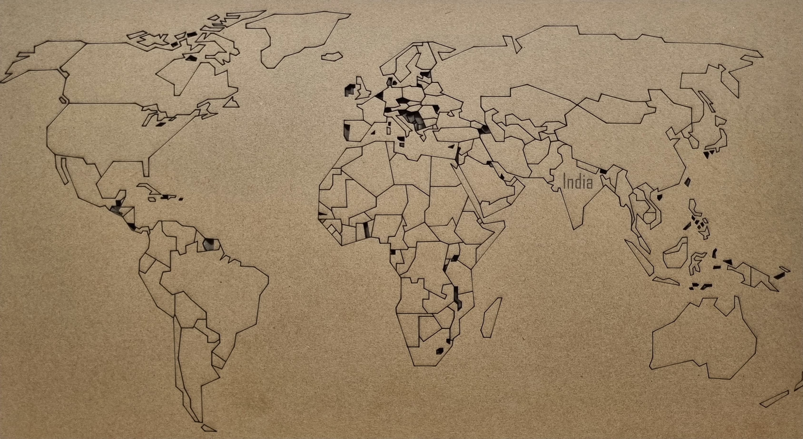

MODULE 3
LASER CUTTING
What is Laser Cutting
Laser cutting is a technology that uses a high-powered laser to cut materials with precision. It's widely used in various industries due to its accuracy, speed, and versatility. Here's some information about laser cutting:
How It Works
Laser Source: A high-powered laser beam is generated from a laser source, typically a CO2 or fiber laser.
Material Preparation The material to be cut is placed on the laser cutting bed or table.
Computer-Aided Design (CAD): A CAD file containing the design or pattern to be cut is loaded into the laser cutting machine's computer.
Cutting Process: The laser beam is directed onto the material's surface, melting, burning, or vaporizing it along the predetermined path defined by the CAD file.
Precision: Laser cutting offers high precision, allowing for intricate designs and tight tolerances.
Advantages of Laser Cutting
Precision: Extremely accurate cuts with tight tolerances.
Versatility: Can cut a wide range of materials, including metals, plastics, wood, and fabrics.
Speed: Fast cutting speeds, making it efficient for mass production.
Clean Cut: Produces clean edges without the need for secondary finishing in many cases.
Automation: Easily integrated with computer-controlled systems for automated cutting processes.
About our First Cut
I had the exciting opportunity to create my own design and bring it to life using a laser cutter. The task was to laser cut a 50x50 mm cardboard into the shape of the head of a famous transformer.
Firstly, I searched the internet for the perfect image that would fit within the given dimensions. Once I found the right design, I began the process of creating it. Using design software, I meticulously crafted the transformer head, ensuring every detail was captured accurately. After completing the design, I exported it in .dxf format, which is compatible with the laser cutting software. With the design ready, I imported the .dxf file into the laser cutting software, Lasercad. I then carefully set up the laser cutter, ensuring everything was in place for a successful cut.
With everything set, I initiated the cutting process. The laser cutter began its precise work, cutting through the cardboard with incredible accuracy. It was mesmerizing to watch as the transformer head took shape, with each detail coming to life as the laser moved across the material. After a few moments, the cutting was complete, and I was left with a perfect cardboard replica of the transformer head. It was a proud moment, knowing that I had successfully created a tangible object using the power of laser cutting technology.
This experience taught me a lot about the capabilities of laser cutting and the importance of precision and attention to detail in design. It was a truly rewarding experience, and I can't wait to explore more with laser cutting in the future.
Cutting World Map
my laser cutting adventure, my team and I embarked on a new challenge: designing and engraving a world map on cardboard. This project required meticulous planning and attention to detail, as we wanted to create a detailed and accurate representation of the world. We began by searching for a reference of the world map, ensuring that we had all the continents, countries, and major cities accurately depicted. Once we had our reference, we started the design process, carefully outlining each continent and country to create a clear and recognizable map.
When the design was complete, we prepared the laser cutter for engraving. We decided to keep the speed of the laser high and the power low to achieve a printed-like effect on the cardboard. This technique worked brilliantly, as the laser engraved the map onto the cardboard with incredible precision, creating a beautiful and detailed representation of the world.

One of the highlights of the project was when we specifically located India on the map. Using the laser, we marked India's position on the map, adding a personal touch to our creation. In the end, we were thrilled with the result. The engraved world map was about 40cm in length and looked stunning. It was a testament to the capabilities of laser cutting technology and our team's creativity and skill.
This experience taught us a lot about the possibilities of laser cutting and engraving and inspired us to continue exploring the world of laser cutting in our future projects.
Engraving images

Engraving an image with a laser cutter involves converting the image into a format compatible with the cutter, typically a vector format like SVG or DXF. Once you have the image in the right format, import it into your laser cutter software. Adjust the settings such as speed, power, and resolution to achieve the desired engraving depth and detail. Position your material securely within the laser cutter bed and ensure proper focus of the laser. Finally, initiate the engraving process, and the laser will trace the image onto your material by removing layers of the material's surface, resulting in a permanent engraving of the image. Always remember to follow safety guidelines and conduct tests on scrap material before engraving your final piece.
Press Fit Model

I took on the challenge of creating a complex pressfit structure using cardboard. After some research, I decided to make a sliceform sphere, also known as a waffle structure of a sphere. This design required precision and careful planning, as each piece needed to fit together perfectly to form the sphere. To begin, I watched tutorials on YouTube to understand the construction of a sliceform sphere. Armed with this knowledge, I used Fusion 360 software to design the individual pieces of the sphere, ensuring that they would interlock correctly when assembled.

Once the design was complete, I moved on to the laser cutting phase. I carefully cut out each piece of the sphere using the laser cutter, paying close attention to detail to ensure clean and accurate cuts. With all the pieces cut, I began the process of assembling the sphere. This was a delicate task, as each piece needed to be inserted into the correct slot to form the sphere's structure. After some time and effort, I successfully assembled the sliceform sphere, marveling at its intricate design.

I wanted to showcase my sphere, so I decided to create a stand for it. I designed the stand myself, ensuring that it would complement the sphere's design. After laser cutting the stand, I assembled it and placed the sphere on top, creating a stunning display of my laser cutting skills.This assignment was a challenging but rewarding experience. It pushed me to think creatively and develop my laser cutting skills further. I look forward to taking on more complex projects in the future and continuing to explore the possibilities of laser cutting technology.
Summary of the Module
From my first day of laser cutting, I embarked on an exciting journey of learning and creating intricate designs using laser technology. I began by learning the basics of laser cutting, including how it works and the precautions to take while operating the machine. I also learned about the different materials that can be used for laser cutting, such as cardboard, MDF, and acrylic, and the potential hazards associated with the process.
On the second day, I had the opportunity to laser cut my own design on a 50x50 mm cardboard, creating the head of a famous transformer. This hands-on experience allowed me to apply what I had learned and see the results of my work firsthand. I researched and designed the transformer head, exported the design in .dxf format, and used the laser cutter to bring it to life.
The following day, my team and I designed and engraved a world map on cardboard, using a technique that created a printed-like effect. We carefully located India on the map, adding a personal touch to our creation. This project challenged us to think creatively and explore the capabilities of laser cutting beyond simple cutting.
Most recently, I tackled a complex pressfit structure assignment, creating a sliceform sphere. I used Fusion 360 to design the sphere, cut it with the laser, and assembled it piece by piece. I also designed and laser cut a stand for the sphere, showcasing my creativity and skills in laser cutting.
Overall, my laser cutting experience has been incredibly rewarding, pushing me to think creatively and develop my skills in design and fabrication. I look forward to continuing to explore the possibilities of laser cutting in future projects.